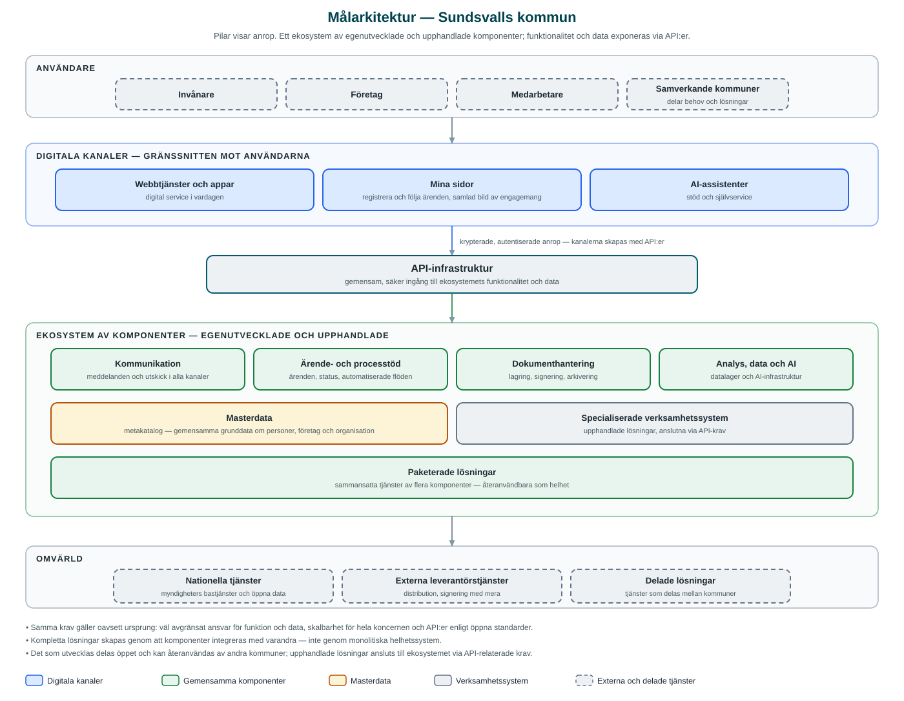

Sundsvalls kommun
Vår målarkitektur
Målarkitekturen beskriver en riktning, ett långsiktigt mål och väsentliga vägval för kommunkoncernens digitala miljö: ett ekosystem av väl avgränsade komponenter – egenutvecklade såväl som upphandlade – som exponerar funktionalitet och data via API:er. Här beskrivs arkitekturen på hög nivå samt de riktlinjer som styr utvecklingen.
Vad är målarkitekturen?
Syftet med målarkitekturen är att beskriva en riktning, ett långsiktigt mål och väsentliga vägval för att nå verksamhetens mål. Den är styrande: lösningar ska i möjligaste mån utformas i enlighet med målarkitekturen, oavsett om de utvecklas i egen regi, upphandlas eller återanvänds från andra.
Målarkitekturen är komponentbaserad. Komponenter är väl avgränsade i fråga om funktion och data, utformas för att vara skalbara och återanvändbara i hela kommunkoncernen, och exponerar sin funktionalitet och sina data via API:er enligt öppna standarder. Kompletta lösningar skapas genom att komponenter integreras med varandra – inte genom monolitiska helhetssystem.
Ekosystemet består av både egenutvecklade och upphandlade komponenter. Vad som byggs själv och vad som upphandlas är ett verksamhets- och lämplighetsval; arkitekturens krav är desamma i båda fallen. Vid upphandling ställs därför API-relaterade krav som säkerställer att upphandlade lösningar passar in i den komponentbaserade arkitekturen och kan samverka med övriga delar av ekosystemet.
Arkitekturen på hög nivå
Målarkitekturen kan beskrivas i skikt: digitala kanaler möter användarna, en gemensam API-infrastruktur förmedlar alla anrop, och bakom den ligger ekosystemet av komponenter – gemensamma förmågor, masterdata och specialiserade verksamhetssystem – med omvärldens tjänster anslutna via integrationer.

Digitala kanaler
De digitala kanalerna samlar gränssnitten i kontakten med invånare, företagare och medarbetare: webbtjänster och appar, mina sidor och AI-assistenter. I mina sidor ingår även det som traditionellt lösts med e-tjänster – att registrera och följa ärenden. Kanalerna skapas med API:er och innehåller ingen egen verksamhetslogik. Det gör att interna system och processer kan förändras löpande utan att kanalerna påverkas – och att samma förmåga kan erbjudas i flera kanaler.
API-infrastruktur
API-infrastrukturen är ekosystemets sammanhållande funktion: en gemensam, säker ingång till komponenternas funktionalitet och data. All åtkomst är krypterad och alla anrop autentiseras. Genom att lösningar bryts ned i väldefinierade komponenter som integrerar med varandra via API-infrastrukturen kan delar utvecklas, upphandlas och bytas ut var för sig.
Gemensamma komponenter
Koncerngemensamma komponenter tillhandahåller generiska förmågor som många verksamheter behöver – till exempel kommunikation och utskick, ärende- och processtöd, dokumenthantering samt analys och AI. Varje komponent har ett tydligt avgränsat ansvarsområde och utformas för att kunna användas av samtliga förvaltningar och bolag. Generellt processtöd gör det möjligt att utforma verksamhetsprocesser som är digitala och automatiserade i grunden.
Masterdata
Gemensamma grunddata – om personer, företag, medarbetare och organisation – hanteras samlat och tillhandahålls via en metakatalog som övriga system och processer använder i stället för egna kopior. Det säkrar återanvändning av data, är en förutsättning för automatisering och minskar spridningen av personuppgifter i ekosystemet.
Verksamhetssystem och upphandlade lösningar
Specialiserade verksamhetssystem är en del av ekosystemet. Vissa har en mogen arkitektur där funktionalitet och data kan nås direkt via API:er; andra behöver kompletterande stöd för att komma till sin rätt. Vid upphandling ställs krav på arkitektur och API:er så att nya lösningar kan integreras med övriga komponenter och inte skapar inlåsning. Analysförmågan i ett gemensamt datalager gör det dessutom möjligt att förstå och följa upp verksamheten oberoende av enskilda system.
Omvärlden
Ekosystemet samspelar med omvärlden: nationella bastjänster och öppna data, externa leverantörstjänster samt lösningar som delas mellan kommuner. Samverkan är dubbelriktad – kommunen nyttjar andras tjänster och delar sina egna, bland annat genom samverkansplattformen Kommuna, där tjänster som utvecklats i en kommun görs tillgängliga för fler.
Riktlinjer och principer
Utvecklingen mot målarkitekturen styrs av ett antal riktlinjer. De gäller oavsett om en lösning utvecklas i egen regi, upphandlas eller återanvänds från någon annan.
Fördjupning och källor
Målarkitekturen dokumenteras löpande, och delar av den realiserade arkitekturen finns beskriven i öppna kataloger. Här kan du fördjupa dig.
utveckling.sundsvall.se
Kommunens webbplats om den digitala utvecklingen: målbild och strategi, den digitala infrastrukturens delar samt metoder och riktlinjer – inklusive API-strategin och krav vid upphandling.
DokumentationUtvecklarwikin
Fördjupad dokumentation av målarkitekturen och API-infrastrukturen för dig som utvecklar på eller integrerar mot plattformen.
SamverkanKommuna
Plattform för delade AI- och digitala tjänster mellan kommuner, där tjänster som utvecklats i en kommun görs tillgängliga för andra.
KatalogAPI-katalogen
De API:er som körs i produktion på kommunens API-plattform, med beskrivningar, arkitekturritningar och interaktiv dokumentation.
KatalogWebbkatalogen
De webbapplikationer kommunen publicerar som öppen källkod – vad varje tjänst gör, vem den är till för och hur den är uppbyggd.
KällkodSundsvalls kommun på GitHub
Källkoden till de komponenter som delas öppet – fri att använda, granska och vidareutveckla.
Målarkitekturen är ett levande styrdokument som utvecklas i takt med verksamhetens behov och omvärldens förutsättningar. Den här sidan beskriver riktningen på hög nivå – detaljerna finns i utvecklingsdokumentationen.